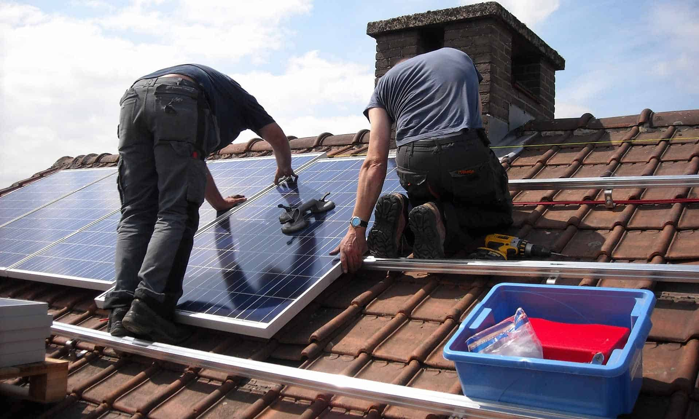

The Ultimate Guide To How Much Solar Panels You Need To Build Your Home
Solar power has become a household energy source in the past few years, with many professionals and homeowners connecting the sun’s light to their homes through solar panels . But even though solar power is becoming a widespread energy source, it can be challenging to know where to start. How much solar power is enough? How much land do I need to build my home? And how do I get the most out of my solar panels? These are some of the questions we explore in this article, along with plenty of DIY suggestions for getting your system up and running. Read on for everything you ever wanted to know about Solar Power, from installation costs to maintenance schedules.
What is Solar Power?
Solar power is any form of electrical or thermal energy generated through the burning ofsolar energy . When solar energy is generated, it is released as energy as well as as a gas or gas composition. Solar energy is generated by both the Earth and the Sun. The Earth’s atmosphere is the largest source of solar energy, while the Sun’s surface is the most important consumer. The amount of solar energy available to the Earth depends on its distance from the Sun – closer to the Sun, the more energy is generated, while further from the Sun, the less energy is sent back to space. In general, solar power has the following main properties: Strong charge – The solar energy is positive, which means it charges up anything it passes through. Staying power – Because the solar energy is positive, it stays with you and gets you work. Low power requirements – The sun does not produce a lot of power, so there is very little power requirement when you’re not using the solar panels.
How Much Solar Power Is Enough?
The amount of solar power you need is determined by a few factors, such as the weather and the seasons in your area. Although you might not need to purchase power every day, it’s good to know how much you need so you can stay on track with your power bills and make sure you’reatisfied with your monthly bill. Here are a few factors to keep in mind when deciding how much solar power you need.
Cost of Solar Panels
Cost per watt is the amount ofelectricity yoursolar panels will cost you. According to experts, a single South Australian solar panel will cost you between $100 and $300, which is a majority of the price of a standard wallpanel. The sun does not always shine from one location, so there is the potential for some solar power to be hidden in a building or trees. To keep solar power from getting out of control, you need to make sure it is located near where you want it to be reflected. You also need to make sure there are controls in place to keep the solar panels stayed in line with your power bill. For example, you may have a 25 Watt solar panel on a roof that is not being used. But if that solar power is not being maintained, it is causing the roof panels to stay on and taking up valuable space on your home’s property.
Why Does solar Power Exist?
The main reason solar power exists is to provide affordable, reliable, and clean electricity for the home. Currently, most electric utilities only provide solar power to customers for free, although some provide a premium fee for the highest-quality solar energy. During the day, when most people are busy doing something else, they are rarely thinking about how much solar power they have. They ultimately rely on the power they get at night to make their energy bills payoff, so having a system to keep the power on when they need it is also important.

MHow Much Space Is In My Home For a Solar Panel?
When you add up the space you will need for a solar panel and the space it takes up, you will realize that you will need at least a third of the space available for a conventional light fixture. If you have the room and the money to build the solar panels yourself, you will need at least a third of the space available for a conventional light fixture to be able to contain the panels. This third space is typically the floor, walls, and ceilings.

Installation Costs of a Solar Panel
When it comes to installing a solar power system, the installation cost is generally divided into two parts: Materials – The materials for a solar power system are usually made from plastic, rock, or other materials plastic is usually best. It fills the room with its power and does not take up valuable space. Routing – Routing makes the electricity from the solar panels flow through nearby electrical power lines. This helps to control the flow of concrete, metal, and other toxic materials across the property. Maintaining the System – After you’ve installed your solar panels and taken them down, it’s a good idea to keep them in fantastic working order. You should be able to maintain your panels on a certified workable level, and you should be able to keep the place clean and bright.
Maintenance Schedules for a Solar Panel
The number of panels you need depends on your income and the number of lights you want to illuminate your home. The amount of labor required will also depend on the operation of the lights and the condition of the raw materials used to make your lights. For example, a family of five with two active children uses about one solar panel every day. A family of six with three children uses about two solar panels every day. A family of eight with four children uses about three solar panels every day. For higher income families with more than four members, you may be required to pay for maintenance on each solar panel unit. These families usually have a schedule for when each solar panel should be replaced and who should should pay for the maintenance.
Source : Solar Power for Beginners